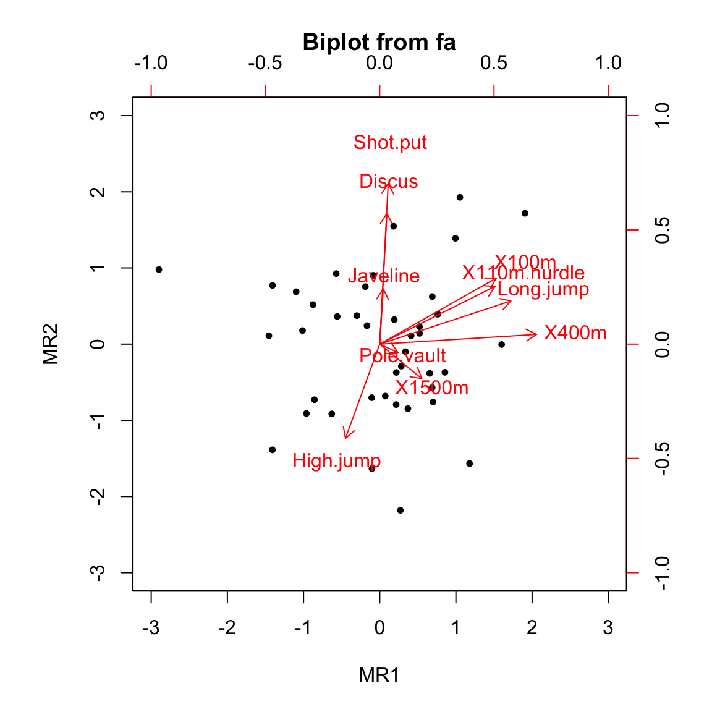
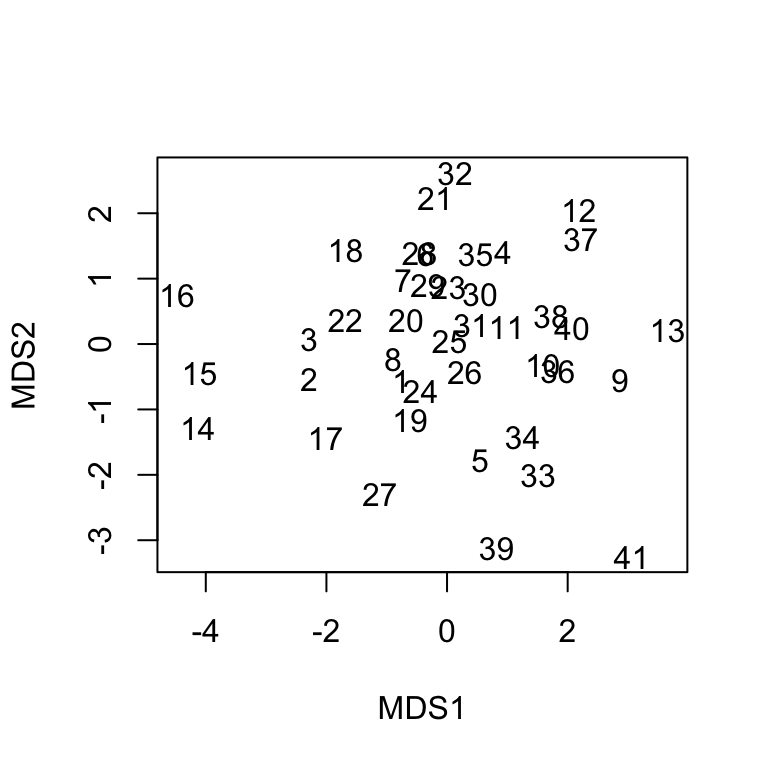
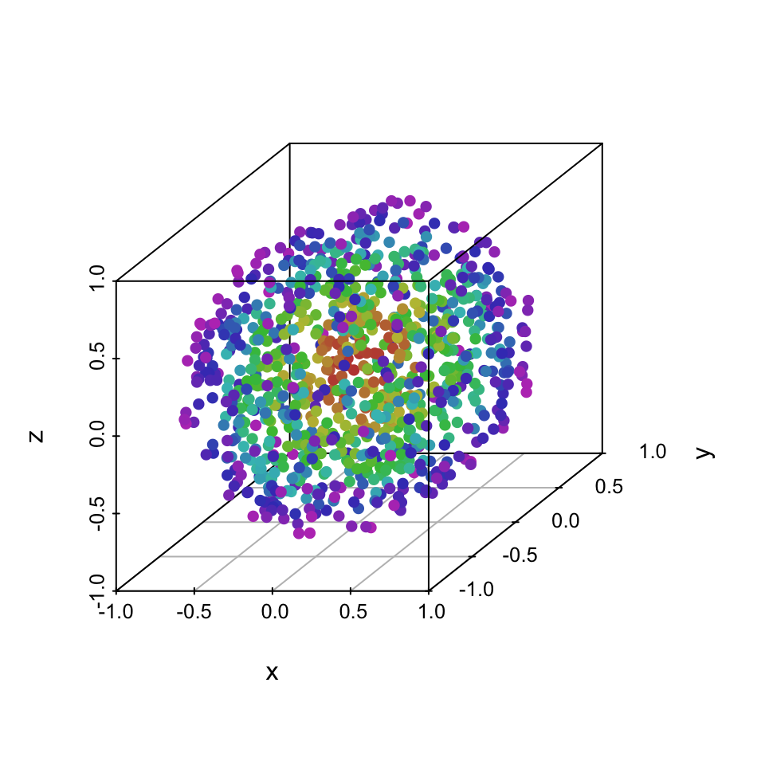
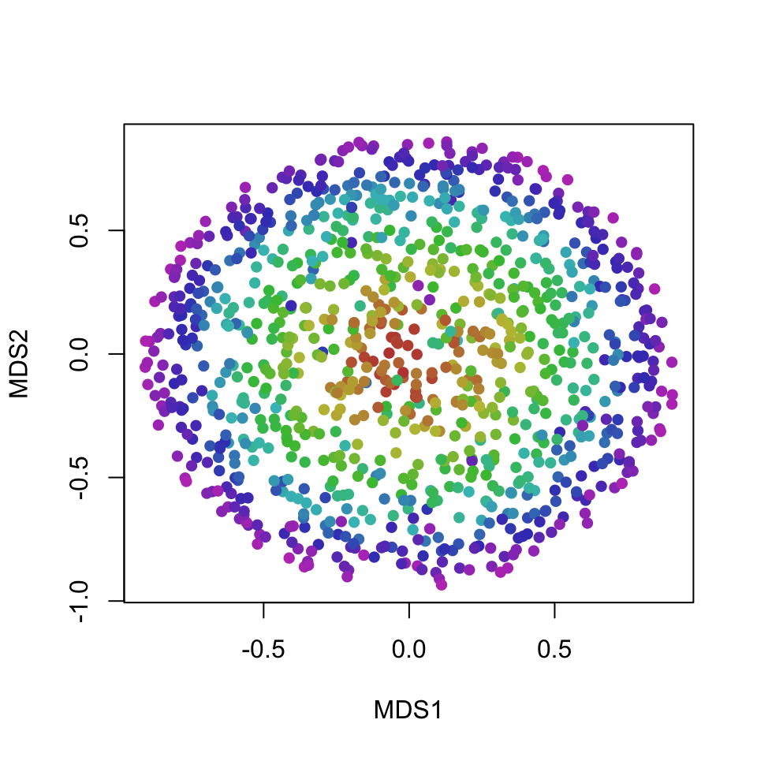
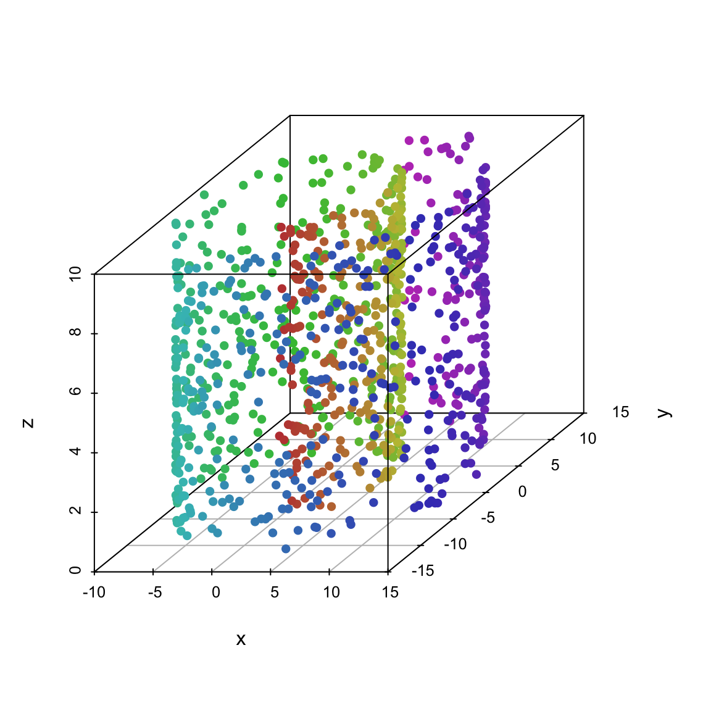
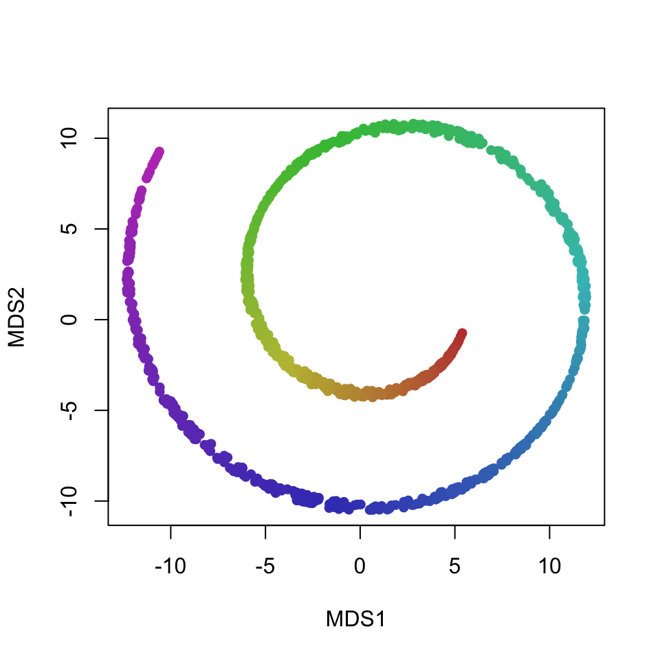
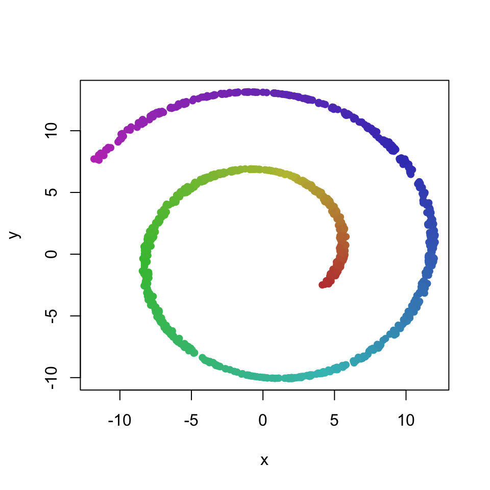
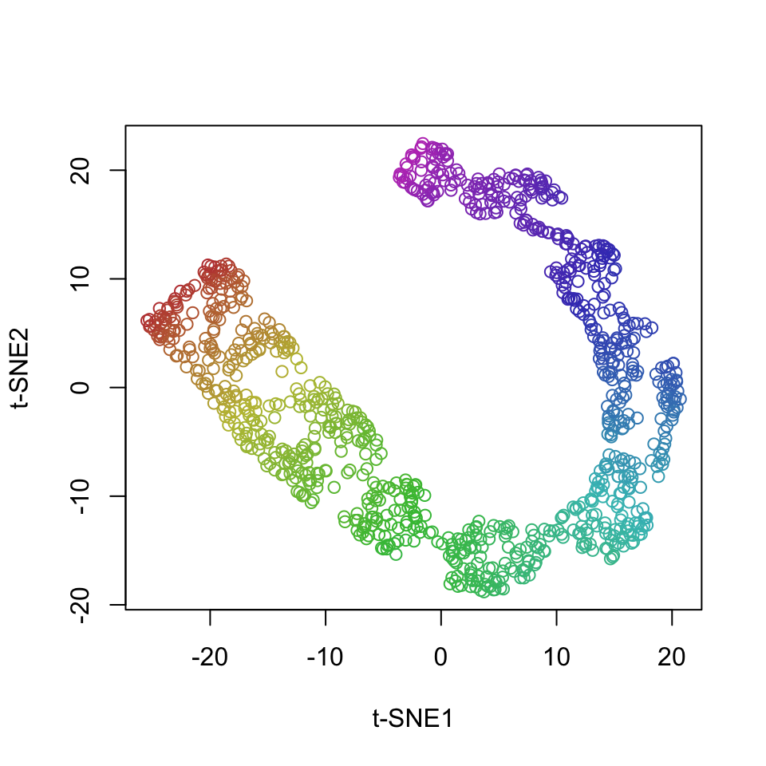
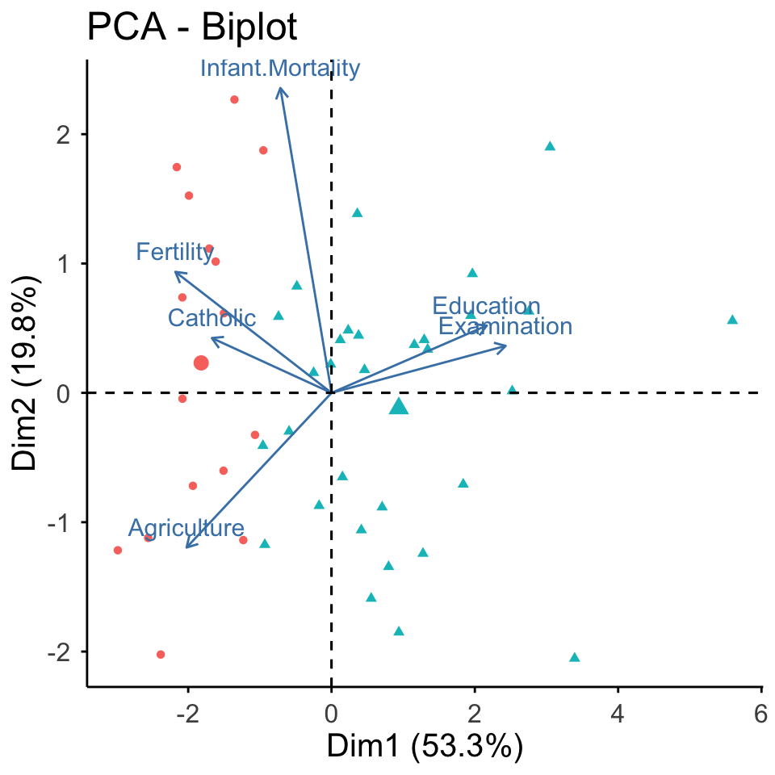

Chapter 8 Summarizing data - multivariate data
Data summarization is the science and art of conveying information more effectivelly and efficiently. Data summarization is typically numerical, visual or a combination of the two. It is a key skill in data analysis - we use it to provide insights both to others and to ourselves. Data summarization is also an integral part of exploratory data analysis.
In this chapter we will focus on the some advanced techniques for multivariate data.
We will be using R and ggplot2, but the contents of this chapter are meant to be tool-agnostic. Readers should use the programming language and tools that they are most comfortable with. However, do not sacrifice expresiveness or profesionallism for the sake of convenience - if your current toolbox limits you in any way, learn new tools!
As we already mentioned, we humans prefer low-dimensional representations of information. This makes sense, because we’ve adapted to living in a 3-dimensional world. The natural way (and the only way) of dealing with high-dimensional data is therefore to map it to fewer dimensions. Often, a lower-dimensional representation can offer useful information and sometimes it can even be done without substantial loss of information. Dimensionality reduction is often also used as a preprocessing step before prediction or inference - fewer dimensions reduce computation times and simplify interpretation of input variables’ importance.
Here, we will discuss some of the most common techniques.
8.1 Principal Component Analysis (PCA)
PCA is typicaly the first method we use and often the only method, due to its simplicity, interpretability and speed. PCA is based on an orthogonal transformation of possibly correlated variables into new linearly uncorrelated variables which we call principal components. The first principal component accounts for as much of the variability as possible and each next component in turn has the highest possible variance, conditional to being orthogonal to all the previous components.
The proportion of variance explained serves as an indicator of the importance of that principal component. If some principal components explain only a small part of the variability, we can discard them and therefore reduce the dimensionality of the representation. Because PCA produces orthogonal (uncorrelated, linearly independent) variables, we can use it as a preprocessing step before linear modelling. If we can interpret the principal components this will simplify the interpretation of the linear model.
Note that PCA is sensitive to the relative scales of the variables. That is, scaling a variable would increase its variance and make it a priority for the principal components to include. Before applying PCA we should scale the variables according to their practical scale or, if we have no preference, standardize them so that they have equal relative importance.
We demonstrate PCA on a dataset of decathlon results. We hypothesize that decathlon results might be explained by a smaller set of dimensions that correspond to the athlete’s strength, explosiveness, and stamina. We’ll use the decathlon dataset that can be found in the FactoMineR R package. First, we load the data:
dat <- read.csv("./data/decathlon.csv")
dat <- dat[,2:11]
print(summary(dat))## X100m Long.jump Shot.put High.jump X400m
## Min. :10.44 Min. :6.61 Min. :12.68 Min. :1.850 Min. :46.81
## 1st Qu.:10.85 1st Qu.:7.03 1st Qu.:13.88 1st Qu.:1.920 1st Qu.:48.93
## Median :10.98 Median :7.30 Median :14.57 Median :1.950 Median :49.40
## Mean :11.00 Mean :7.26 Mean :14.48 Mean :1.977 Mean :49.62
## 3rd Qu.:11.14 3rd Qu.:7.48 3rd Qu.:14.97 3rd Qu.:2.040 3rd Qu.:50.30
## Max. :11.64 Max. :7.96 Max. :16.36 Max. :2.150 Max. :53.20
## X110m.hurdle Discus Pole.vault Javeline
## Min. :13.97 Min. :37.92 Min. :4.200 Min. :50.31
## 1st Qu.:14.21 1st Qu.:41.90 1st Qu.:4.500 1st Qu.:55.27
## Median :14.48 Median :44.41 Median :4.800 Median :58.36
## Mean :14.61 Mean :44.33 Mean :4.762 Mean :58.32
## 3rd Qu.:14.98 3rd Qu.:46.07 3rd Qu.:4.920 3rd Qu.:60.89
## Max. :15.67 Max. :51.65 Max. :5.400 Max. :70.52
## X1500m
## Min. :262.1
## 1st Qu.:271.0
## Median :278.1
## Mean :279.0
## 3rd Qu.:285.1
## Max. :317.0Next, we prepare the data by standardizing the columns - we don’t want 1500m running to be more important just because it has a larger scale! We also take the negative value of the running events - we want all the variables to be of the type “larger is better” to simplify interpretation.
dat[,c(1,4,5,6,10)] <- -dat[,c(1,4,5,6,10)]
dat <- scale(dat)Now we are ready to do PCA:
res <- prcomp(dat)
prop_explained <- res$sdev^2 / sum(res$sdev^2)
data.frame(prop_explained, cumsum(prop_explained))## prop_explained cumsum.prop_explained.
## 1 0.32719055 0.3271906
## 2 0.17371310 0.5009037
## 3 0.14049167 0.6413953
## 4 0.10568504 0.7470804
## 5 0.06847735 0.8155577
## 6 0.05992687 0.8754846
## 7 0.04512353 0.9206081
## 8 0.03968766 0.9602958
## 9 0.02148149 0.9817773
## 10 0.01822275 1.0000000We can see that the first two principal components explain half of the variability in the data. And if we keep half of the principal components, we lose only about 13% of the variability. We could now argue that the latent dimensionality of this data is lower than the original 10 dimensions.
Of course, in order to produce a meaningful summary of the data, we must provide an explanation of what these principal components represent:
round(res$rotation,2)## PC1 PC2 PC3 PC4 PC5 PC6 PC7 PC8 PC9 PC10
## X100m 0.43 -0.14 0.16 -0.04 0.37 -0.30 0.38 -0.46 -0.10 0.42
## Long.jump 0.41 -0.26 0.15 -0.10 -0.04 -0.31 -0.63 -0.02 0.48 -0.08
## Shot.put 0.34 0.45 -0.02 -0.19 -0.13 0.31 0.31 -0.31 0.43 -0.39
## High.jump -0.32 -0.27 0.22 -0.13 0.67 0.47 -0.09 -0.13 0.24 -0.11
## X400m 0.38 -0.43 -0.11 0.03 -0.11 0.33 -0.12 -0.21 -0.55 -0.41
## X110m.hurdle 0.41 -0.17 0.08 0.28 0.20 0.10 0.36 0.71 0.15 -0.09
## Discus 0.31 0.46 0.04 0.25 0.13 0.45 -0.43 0.04 -0.15 0.45
## Pole.vault 0.03 -0.14 0.58 -0.54 -0.40 0.26 0.10 0.18 -0.08 0.28
## Javeline 0.15 0.24 -0.33 -0.69 0.37 -0.16 -0.11 0.30 -0.25 -0.09
## X1500m 0.03 -0.36 -0.66 -0.16 -0.19 0.30 0.08 -0.01 0.31 0.43As we described in the beginning, each principal component is a linear combination of the original variables. Because we standardized the variables, the corresponding coefficients serve as an indicator of importance. For example, pole vaulting and 1500m running have little importance in the first principal component, while these two disciplines have the highest weight in the fourth principal components.
The meaning of principal components can more easily be discerend by plotting pairs of components, their relationship with the original variables, and individual observations. Typically, we first plot the first two principal components - components which explain most of the variance:
biplot(res, cex = 0.8)This reveals two major axes in the data - (1) athletes that have high values in PC1 and PC2 are better at javeline, discus, and shotput (events that require strength) and worse at high jump (events where having a lot of muscle mass is detrimental) and (2) atletes that have high PC1 but low PC2 are better at all the shorter running events and long jump (events that depend on running speed). Pole vaulting and 1500m running results are not explained well by the first two principal components.
8.2 Factor analysis (FA)
Another commonly used dimensionality reduction and exploratory data analysis technique is factor analysis. In application and interpretation it is similar to PCA, but it solves a different problem. PCA tries to explain the variability in the data with linear combinations of the variables. FA on the other hand assumes the existence of unmeasurable (latent) variables, also known as factors, and that the measured data can be explained as a linear combination of these factors.
We demonstrate FA on the same dataset as PCA. In its basic form, FA requires us to specify the number of factors. We’ll assume from previous experience that there are two main factors that explain most of the variability in decathlon results:
dat <- read.csv("./data/decathlon.csv")
dat <- dat[,2:11]
dat[,c(1,4,5,6,10)] <- -dat[,c(1,4,5,6,10)]
dat <- scale(dat)
res <- factanal(dat, factors = 2)
library(psych)
library(GPArotation)
res <- fa(dat, nfactors = 2, rotate = "varimax")
biplot(res)
We can see from the plot that the results are visually similar to PCA results only rotated. Rotation is an important concept in FA. Because we are simultaneously fitting latent factors and the coefficients (loadings) of the linear combination of these factors, the solution is invariant to rotation. That is, there are infinitely many (equivalent) solutions to the FA problem. Before we interpret the results, we have to pick one rotation. For easier interpretation, we prefer rotations that keep the factors orthogonal and reduce the number of variables that each factor relates to (loads on). One such rotation is Varimax, which we used in the above example.
Before we interpret the results, let’s print the loadings:
print(res$loadings, cutoff = 0.4)##
## Loadings:
## MR1 MR2
## X100m 0.638
## Long.jump 0.717
## Shot.put 0.879
## High.jump -0.515
## X400m 0.858
## X110m.hurdle 0.631
## Discus 0.715
## Pole.vault
## Javeline
## X1500m
##
## MR1 MR2
## SS loadings 2.157 1.967
## Proportion Var 0.216 0.197
## Cumulative Var 0.216 0.412First, observe that not all factors have a substantial influence (loading) on each variable, whereas in PCA each component was moderately influenced by most variables. This is the result of using a rotation that minimizes the complexity of the model in this sense.
The interpretation of the two factor is as follows (this can be derived from the above plot as well as the printed loadings). The first latent factor (MR1) correlates positively with all the shorter running events and long jump. We can interpret this factor as the explosiveness of the athlete. The second latent factor (MR1) correlates positively with shot put and discus and negatively with high jump. We can interpret this factor as the strength of the athlete.
Note two more things regarding the interpretation of latent factors. First, the meaning of latent factors can only be inferred through their influence on measured variables and always relies on domain specific knowledge. And second, interpreting latend factors is not an exact science - in the above example we revealed some interesting and useful structure in the data, but more than half of the variance still remains unexplained (see the loadings output above) and the two factors also affect other variables, albeit less than the ones shown in the output.
8.3 Multi-dimensional scaling (MDS)
MDS is a dimensionality reduction technique that is based on the idea of representing the original data in a lower (typically 2-dimensional) space in a way that best preserves the distances between observations in the original space. The results of MDS are of course sensitive to the distance (metric) that we choose and, similar to PCA, scaling of the variables. There are many variants of MDS: classic MDS uses Euclidean distance and a generalization of that to an arbitrary metric is called metric MDS. There are also non-metric variants of MDS that allow for monotonic transformations of distance.
Unlike PCA, MDS does not assume that the high-dimensional structure of the input data can be reduced in a linear fashion and is not sensitive to outliers. That is, MDS can reduce dimensionality in a more robust way than PCA and can be used to detect outliers. Note that MDS, unlike PCA, can be used on data where only the relative distances are known (imagine knowing distances betwee cities but not their geographic locations).
We’ll be using non-metric MDS and we’ll first apply it to the decathlon data from the PCA example:
library(MASS)
d <- dist(dat) # compute Euclidean distances between observations
res <- isoMDS(d, trace = F)$points
plot(res, xlab = "MDS1", ylab = "MDS2", col = "white")
text(res, labels = 1:nrow(dat))
In order to understand MDS1 and MDS2 dimensions, we would have to look at the characteristics of the athletes on the left-hand or right-hand side (higher and lower). Fortunately, we do not have to go through the effort, because we can readily compare this result to the result of PCA and we will quickly determine that they are very similar (up to rotation).
To better illustrate where PCA might fail but MDS would give reasonable results, we’ll use a 3D ball.
library(scatterplot3d)
library(MASS)
dataset <- readRDS("./data/dataset.rds")$ball
dataset <- dataset[sample(1:nrow(dataset),1000, rep = F),]
scatterplot3d(dataset[,1:3], color = dataset[,4], pch = 16)
All three dimensions are almost identical, so PCA can only produce principal components that are a rotation of the ball. That is, the projection on the first two components does not add any value over just visualizing the first two original dimensions:
# PCA
res <- prcomp(dataset[,1:3])
rot <- as.matrix(dataset[,1:3]) %*% t(res$rotation)
plot(rot[,1:2], col = dataset[,4], pch = 16, xlab = "PCA1", ylab = "PCA2")On the other hand, MDS works with distances (topology) and groups points that are on similar layers of the ball closer together, producing a more useful 2D projection of the layers of the ball:
# MDS
d <- dist(dataset[,1:3]) # compute Euclidean distances between observations
res <- isoMDS(d, trace = F)$points
plot(res, xlab = "MDS1", ylab = "MDS2", col = dataset[,4], pch = 16)
8.4 t-Distributed Stochastic Neighbor Embedding (t-SNE)
t-SNE is an advanced state-of-the-art non-linear technique for dimensionality reduction and visualization of high-dimensional data.
The key idea of t-SNE is to minimize the divergence between a distribution that measures pairwise similarities of the input objects and a distribution that measures pairwise similarities of the corresponding low-dimensional points in the embedding. Note that t-SNE is mainly a data exploration and visualization technique - the input features are no longer identifiable in the embedding, so inference can not be done only with t-SNE output.
The expressivenes of t-SNE makes it very useful for visualizing complex datasets that require non-linear transformations. On the other hand, as with all complex methods, there is the added computational complexity, additional parameters that need to be tuned, and fewer guarantees regarding convergence to a sensible solution. Due to its stochastic nature, t-SNE output can vary on the same data or, if we set the seed, we can get substantially different results for different seeds.
We illustrate t-SNE on data known as the Swiss-roll:
library(scatterplot3d)
dataset <- readRDS("./data/dataset.rds")$roll
dataset <- dataset[sample(1:nrow(dataset),1000, rep = F),]
scatterplot3d(dataset[,1:3], color = dataset[,4], pch = 16)
MDS and PCA preserve the x and y dimensions of the data:
# MDS
d <- dist(dataset[,1:3]) # compute Euclidean distances between observations
res <- isoMDS(d, trace = F)$points
plot(res, xlab = "MDS1", ylab = "MDS2", col = dataset[,4], pch = 16)
# PCA
res <- prcomp(dataset[,1:3])
rot <- as.matrix(dataset[,1:3]) %*% t(res$rotation)
plot(rot[,1:2], col = dataset[,4], pch = 16)
t-SNE on the other hand projects the data manifold into 2 dimensions, which produces an arguably more useful visualization of the characteristics of the data:
library(Rtsne)
set.seed(321)
res <- Rtsne(dataset[,1:3], perplexity = 50)
plot(res$Y, col = dataset[,4], xlab = "t-SNE1", ylab = "t-SNE2")
8.5 Clustering
Another common summarizatin technique is to group the observations into a finite number of groups or clusters. There are numerous clustering techniques, but they all have the same underlying general idea - we want to cluster the points in such a way that similar observations are in the same cluster and dissimilar observations are in different clusters. Instead of hard assignments to clusters, we can also probabilistically assign observations to clusters or assign some other type of assignment weight. This is known as soft clustering and we’ll not be discussing it in this text.
8.5.1 k-means clustering
One of the most common and useful clustering methods is k-means clustering. It is based on the assumption that the data were generated by k multivariate normal distributions, each representing one cluster. An observation is assigned to the cluster that it was most likely to have been generated from - and, because we are assuming normal distributions, this reduces to assigning the observation to the mean (centroid) that is closest in terms of Euclidean distance.
We’ll illustrate k-means clustering on the swiss dataset from R - data about 47 provinces of Switzerland in about 1888:
summary(swiss)## Fertility Agriculture Examination Education
## Min. :35.00 Min. : 1.20 Min. : 3.00 Min. : 1.00
## 1st Qu.:64.70 1st Qu.:35.90 1st Qu.:12.00 1st Qu.: 6.00
## Median :70.40 Median :54.10 Median :16.00 Median : 8.00
## Mean :70.14 Mean :50.66 Mean :16.49 Mean :10.98
## 3rd Qu.:78.45 3rd Qu.:67.65 3rd Qu.:22.00 3rd Qu.:12.00
## Max. :92.50 Max. :89.70 Max. :37.00 Max. :53.00
## Catholic Infant.Mortality
## Min. : 2.150 Min. :10.80
## 1st Qu.: 5.195 1st Qu.:18.15
## Median : 15.140 Median :20.00
## Mean : 41.144 Mean :19.94
## 3rd Qu.: 93.125 3rd Qu.:21.70
## Max. :100.000 Max. :26.60We’ll suppose that there are 2 clusters in the data (automatic determination of the number of clusters will be discussed later in this chapter):
res <- kmeans(swiss, centers = 2)
print(res$cluster)## Courtelary Delemont Franches-Mnt Moutier Neuveville Porrentruy
## 2 1 1 2 2 1
## Broye Glane Gruyere Sarine Veveyse Aigle
## 1 1 1 1 1 2
## Aubonne Avenches Cossonay Echallens Grandson Lausanne
## 2 2 2 2 2 2
## La Vallee Lavaux Morges Moudon Nyone Orbe
## 2 2 2 2 2 2
## Oron Payerne Paysd'enhaut Rolle Vevey Yverdon
## 2 2 2 2 2 2
## Conthey Entremont Herens Martigwy Monthey St Maurice
## 1 1 1 1 1 1
## Sierre Sion Boudry La Chauxdfnd Le Locle Neuchatel
## 1 1 2 2 2 2
## Val de Ruz ValdeTravers V. De Geneve Rive Droite Rive Gauche
## 2 2 2 2 2Unless we understand the meaning of the observations (in this case, province names), cluster assignments carry little information. This is similar to latent factors - unless we have some domain specific knowledge, we will not be able to interpret the meaning of the clusters. In fact, clustering is only a special case of latent modeling. Instead of a set of numerical factors we have one factor that explains the data - the cluster assignment.
To gain more insight, we can plot the clusters. This is typically done with some dimensionality reduction method that projects the data into 2 dimensions and preserves as much information as possible - the methods we’ve been discussing so far in this chapter. We’ll plot the clusters in the space determined by the first two principal components:
library(factoextra)## Loading required package: ggplot2##
## Attaching package: 'ggplot2'## The following objects are masked from 'package:psych':
##
## %+%, alpha## Welcome! Want to learn more? See two factoextra-related books at https://goo.gl/ve3WBapca <- prcomp(swiss, scale=TRUE)
fviz_pca_biplot(pca, label="var", habillage=as.factor(res$cluster)) +
labs(color=NULL) + theme(text = element_text(size = 15),
panel.background = element_blank(),
panel.grid.major = element_blank(),
panel.grid.minor = element_blank(),
axis.line = element_line(colour = "black"),
legend.position="none")
Now we can interpret the two clusters as predominately Catholic and predominately Protestant provinces. PCA also shows some other characteristics associated with the clusters - blue is associated with higher fertility and more agriculture, while red is associated with higher education.
K-means clustering is simple and fast. It is, however, sensitive to outliers and, if the typical iterative algorithm is used, it might not converge to the same solution every time (solution might be sensitive to choice of initial centroids). K-means clustering also performs poorly in cases where the modelling assumption of k multivariate normal distributions does not hold.
8.5.2 Determining the number of clusters
A very simple but often good enough way of determining the most appropriate number of clusters is the so-called elbow method. The idea is to find the number of clusters after which, if we furter increase the number of clusters, does no longer substantially decrease within-cluster variability. Within-cluster variability is decreasing in the number of clusters - more clusters will always lead to clusters being more similar, up to the point of assigning every point to its own cluster, which leads to 0 within-cluster variability. However, if adding a cluster decreases the within-cluster variability by a relatively small amount, that indicates that we might just be splitting already very homogeneous clusters.
We demonstrate this technique by plotting the within-cluster variability for different numbers of clusters (also called a scree plot):
wss <- 0
maxk <- 10
for (i in 1:maxk) {
km <- kmeans(swiss, centers = i)
wss[i] <- km$tot.withinss
}
# Plot total within sum of squares vs. number of clusters
plot(1:maxk, wss, type = "b",
xlab = "Number of Clusters",
ylab = "Within groups sum of squares")We see that after 2 clusters, the within-cluster variability decreases slowly. Therefore, according to this technique, k = 2 (or k = 3) is a good choice for the number of clusters. Sometimes there will be no distinct elbow in the scree plot and we will not be able to use this technique effectively.
Another popular technique is to compute the silhouette index. The silhouette index measures how similar an observation is to its own cluster compared to other clusters ). It ranges from -1 to +1, where a high value indicates that the object is well matched to its own cluster and poorly matched to neighboring clusters. If most objects have a high value, then the clustering configuration is appropriate. If many points have a low or negative value, then the clustering configuration may have too many or too few clusters. Because it takes into account within and between-cluster variability, the silhouette index, unlike within-cluster variability, does not necessarily increase with the number of clusters - at some point it typically starts decreasing.
library(cluster)
si <- 0
maxk <- 10
for (i in 2:maxk) {
km <- kmeans(swiss, centers = i)
si[i] <- mean(silhouette(km$cluster, dist(swiss))[,3]) # mean Silhouette
}
si## [1] 0.0000000 0.6284002 0.5368920 0.4406436 0.4495773 0.4056314 0.3703828
## [8] 0.3806726 0.3447439 0.3502419In this case the Silhouette technique leads to the same conclusion - k = 2 is the best choice for the number of clusters.
Alternatively, we can use clustering methods such as Affinity propagation and Mean shift clustering where the number of clusters is determined automatically. However, such methods introduce other parameters, such as kernel bandwidth.
8.5.3 Agglomerative hierarchical clustering
Hierarchical clustering is an umbrella term for a host of clustering methods that build a hierarchy of clusters. Here we’ll talk about agglomerative clustering - hierarchical clustering that starts with each observation in its own cluster and procedes by joining the most similar clusters, until only one cluster remains. The steps of this procedure form a hierarchical cluster structure. Divisive hierarchical clustering approaches instead start with one cluster and procede by splitting the clusters.
There are also several different criteria for determining the two most similar clusters A and B: smallest minimum distance between a point from A and a point from B (single linkage), smallest maximum distance (complete linkage), average distance, and many other, each with its own advantages and disadvantages.
Here, we’ll apply hierarchical agglomerative clustering with joining clusters according to average distance. Of course, hierarchical clustering works for any distance (metric). We choose Euclidean distance. Here are the results for the swiss dataset:
res_hk <- hclust(dist(swiss), method = "average")
plot(res_hk)The above dendrogram visualizes the entire hierarchical clustering structure. We can see how a hierarchical clustering contains not just one, but a clustering for every number of clusters between 1 and the number of points.
Comparing with k-means results for 2 clusters, we can see that the two methods return identical clusters:
hk2 <- cutree(res_hk, k = 2)
res <- kmeans(swiss, centers = 2)
km2 <- res$cluster
rbind(hk2, km2)## Courtelary Delemont Franches-Mnt Moutier Neuveville Porrentruy Broye Glane
## hk2 1 2 2 1 1 2 2 2
## km2 1 2 2 1 1 2 2 2
## Gruyere Sarine Veveyse Aigle Aubonne Avenches Cossonay Echallens Grandson
## hk2 2 2 2 1 1 1 1 1 1
## km2 2 2 2 1 1 1 1 1 1
## Lausanne La Vallee Lavaux Morges Moudon Nyone Orbe Oron Payerne
## hk2 1 1 1 1 1 1 1 1 1
## km2 1 1 1 1 1 1 1 1 1
## Paysd'enhaut Rolle Vevey Yverdon Conthey Entremont Herens Martigwy Monthey
## hk2 1 1 1 1 2 2 2 2 2
## km2 1 1 1 1 2 2 2 2 2
## St Maurice Sierre Sion Boudry La Chauxdfnd Le Locle Neuchatel Val de Ruz
## hk2 2 2 2 1 1 1 1 1
## km2 2 2 2 1 1 1 1 1
## ValdeTravers V. De Geneve Rive Droite Rive Gauche
## hk2 1 1 1 1
## km2 1 1 1 1However, for 3 clusters, the results are, at first glance, completely different:
hk2 <- cutree(res_hk, k = 3)
res <- kmeans(swiss, centers = 3)
km2 <- res$cluster
rbind(hk2, km2)## Courtelary Delemont Franches-Mnt Moutier Neuveville Porrentruy Broye Glane
## hk2 1 2 2 1 1 2 2 2
## km2 1 3 3 2 2 3 3 3
## Gruyere Sarine Veveyse Aigle Aubonne Avenches Cossonay Echallens Grandson
## hk2 2 2 2 1 1 1 1 1 1
## km2 3 3 3 2 2 2 2 2 2
## Lausanne La Vallee Lavaux Morges Moudon Nyone Orbe Oron Payerne
## hk2 1 1 1 1 1 1 1 1 1
## km2 1 1 2 2 2 2 2 2 2
## Paysd'enhaut Rolle Vevey Yverdon Conthey Entremont Herens Martigwy Monthey
## hk2 1 1 1 1 2 2 2 2 2
## km2 2 2 1 2 3 3 3 3 3
## St Maurice Sierre Sion Boudry La Chauxdfnd Le Locle Neuchatel Val de Ruz
## hk2 2 2 2 1 1 1 1 1
## km2 3 3 3 2 1 1 1 2
## ValdeTravers V. De Geneve Rive Droite Rive Gauche
## hk2 1 3 3 3
## km2 1 1 1 1When comparing different clusterings of the same data, we must keep in mind that a clustering is invariant to relabelling. That is, the cluster label or number has no meaning - a clusters meaning is determined by the observations in that cluster. This is anoter case of the invariance to rotation problem with FA that is common to all latent models.
As a consequence, there exist special summaries for cluster similarity. One of the most commonly used is the Rand index. It is defined as the ratio of concordant pairs in all pairs of points. A pair of points is concordant if the points are either in the same cluster in both clusterings or in different clusters in both clusterings.
Typicaly, we would use an exisitng implementation, but here we implement the basic Rand Index ourselves:
concordant <- 0
for (i in 2:length(hk2)) {
for (j in 1:(i-1)) {
if ((hk2[i] == hk2[j]) == (km2[i] == km2[j])) concordant <- concordant + 1
}
}
rand_idx <- concordant / choose(length(hk2), 2)
round(rand_idx, 2)## [1] 0.83By definition, the Rand index is between 0 and 1.
8.6 Further reading and references
For more information on multivariate methods, we recommend Hair, J. F., Black, W. C., Babin, B. J., & Anderson, R. E. (2009). Multivariate Data Analysis 7th Edition Pearson Prentice Hall. The following chapters are particularly relevant to what we are trying to learn in this course:
- Chapter 1: Overview of multivariate methods.
- Chapter 2. Examining your data.
And these two chapters provide more details on the multivariate techniques that we discussed:
- Chapter 3. Exploratory factor analysis.
- Chapter 8: Cluster Analysis
- Chapter 9: Multidimensional Scaling and Correspondence Analysis
8.7 Learning outcomes
Data science students should work towards obtaining the knowledge and the skills that enable them to:
- Reproduce the techniques demonstrated in this chapter using their language/tool of choice.
- Recognize when a technique is appropriate and when it is not.
- Apply data summarization techiques to obtain insights from data.
8.8 Practice problems
- Download the Football Manager Players dataset or use a similarly rich dataset with numerical, binary and categorical variables. With Python or R demonstrate the application and interpretation of results for each of the multivariate summarization techniques from this chapter.